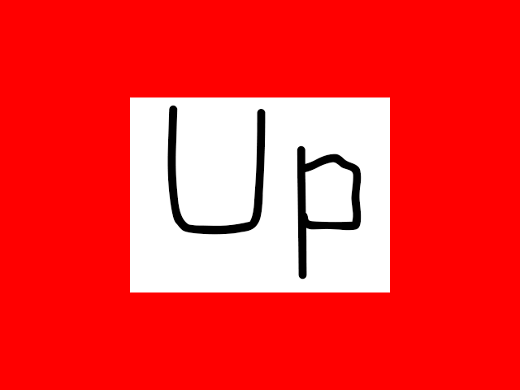

Key Presses and Key States

Last Updated: Jul 13th, 2025
In this tutorial we'll be handling keyboard input./* Global Variables */
//The window we'll be rendering to
SDL_Window* gWindow{ nullptr };
//The renderer used to draw to the window
SDL_Renderer* gRenderer{ nullptr };
//The directional images
LTexture gUpTexture, gDownTexture, gLeftTexture, gRightTexture;
Here are the directional textures we're going to render based on the user's input.
bool loadMedia()
{
//File loading flag
bool success{ true };
//Load directional images
if( gUpTexture.loadFromFile( "03-key-presses-and-key-states/up.png" ) == false )
{
SDL_Log( "Unable to load up image!\n");
success = false;
}
if( gDownTexture.loadFromFile( "03-key-presses-and-key-states/down.png" ) == false )
{
SDL_Log( "Unable to load down image!\n");
success = false;
}
if( gLeftTexture.loadFromFile( "03-key-presses-and-key-states/left.png" ) == false )
{
SDL_Log( "Unable to load left image!\n");
success = false;
}
if( gRightTexture.loadFromFile( "03-key-presses-and-key-states/right.png" ) == false )
{
SDL_Log( "Unable to load right image!\n");
success = false;
}
return success;
}
Here we are loading the textures.
If you're wondering why we continue to try to load images even if one of them fails, it's because we want to get all potential failures at once which makes things easier to debug as opposed to fixing one error, then getting another bug, and then fixing another, etc.
If you're wondering why we continue to try to load images even if one of them fails, it's because we want to get all potential failures at once which makes things easier to debug as opposed to fixing one error, then getting another bug, and then fixing another, etc.
//The quit flag
bool quit{ false };
//The event data
SDL_Event e;
SDL_zero( e );
//The currently rendered texture
LTexture* currentTexture = &gUpTexture;
//Background color defaults to white
SDL_Color bgColor{ 0xFF, 0xFF, 0xFF, 0xFF };
Before we enter the main loop, we want to default the texture to the up texture and the background color to white.
//Get event data
while( SDL_PollEvent( &e ) == true )
{
//If event is quit type
if( e.type == SDL_EVENT_QUIT )
{
//End the main loop
quit = true;
}
//On keyboard key press
else if( e.type == SDL_EVENT_KEY_DOWN )
{
//Set texture
if( e.key.key == SDLK_UP )
{
currentTexture = &gUpTexture;
}
else if( e.key.key == SDLK_DOWN )
{
currentTexture = &gDownTexture;
}
else if( e.key.key == SDLK_LEFT )
{
currentTexture = &gLeftTexture;
}
else if( e.key.key == SDLK_RIGHT )
{
currentTexture = &gRightTexture;
}
}
}
When a keyboard key is pressed, we get an SDL_EventType of
Here we set the texture we want to eventually render.
SDL_EVENT_KEY_DOWN and an event type of SDL_KeyboardEvent happens. The key member gives us the
SDL_Keycode of the key press which is the virtual key which is based on the keyboard layout as opposed to the physical key.Here we set the texture we want to eventually render.
//Reset background color to white
bgColor.r = 0xFF;
bgColor.g = 0xFF;
bgColor.b = 0xFF;
//Set background color based on key state
const bool* keyStates = SDL_GetKeyboardState( nullptr );
if( keyStates[ SDL_SCANCODE_UP ] == true )
{
//Red
bgColor.r = 0xFF;
bgColor.g = 0x00;
bgColor.b = 0x00;
}
else if( keyStates[ SDL_SCANCODE_DOWN ] == true )
{
//Green
bgColor.r = 0x00;
bgColor.g = 0xFF;
bgColor.b = 0x00;
}
else if( keyStates[ SDL_SCANCODE_LEFT ] == true )
{
//Yellow
bgColor.r = 0xFF;
bgColor.g = 0xFF;
bgColor.b = 0x00;
}
else if( keyStates[ SDL_SCANCODE_RIGHT ] == true )
{
//Blue
bgColor.r = 0x00;
bgColor.g = 0x00;
bgColor.b = 0xFF;
}
Before we start rendering we want to set the background color. Where the texture is based on the most recent key press event, the background color is based on the current state of the keyboard.
First we reset the background color to white so the background will be white unless the user is pressing a directional key. Then we get the current state of the keyboard keys with SDL_GetKeyboardState. We can then get the state of the keys using the SDL_Scancode which is based off the physical keyboard key independent of language and keyboard mapping.
First we reset the background color to white so the background will be white unless the user is pressing a directional key. Then we get the current state of the keyboard keys with SDL_GetKeyboardState. We can then get the state of the keys using the SDL_Scancode which is based off the physical keyboard key independent of language and keyboard mapping.
//Fill the background
SDL_SetRenderDrawColor( gRenderer, bgColor.r, bgColor.g, bgColor.b, 0xFF );
SDL_RenderClear( gRenderer );
//Render image on screen
currentTexture->render( ( kScreenWidth - currentTexture->getWidth() ) / 2.f, ( kScreenHeight - currentTexture->getHeight() ) / 2.f );
//Update screen
SDL_RenderPresent( gRenderer );
Finally we render the background color the and key press texture.
If you're wondering what those calculations are in the image coordinates, it's how you center an image. Say for example you had:
Or expressed in variables:
If you're wondering what those calculations are in the image coordinates, it's how you center an image. Say for example you had:
- screen width of 1000
- image width of 200
( 1000 - 200 ) / 2 = 400Or expressed in variables:
( screenWidth - imageWidth ) / 2
Addendum: Division vs multiplication performance
One thing you learn in computer architecture is that floating point division is significantly slower than floating point multiplication. So an easy way to optimize this code:
Is to replace the divison by multiplying by the inverse:
But in my opinion the division code is easier to read so I chose ease of reading over performance. Besides, when optimizing with inverses, we care about optimizing things like physics simulations of tens or hundreds of thousands of rigid bodies, not a handful of images.
currentTexture->render( ( kScreenWidth - currentTexture->getWidth() ) / 2.f, ( kScreenHeight - currentTexture->getHeight() ) / 2.f );Is to replace the divison by multiplying by the inverse:
currentTexture->render( ( kScreenWidth - currentTexture->getWidth() ) * 0.5f, ( kScreenHeight - currentTexture->getHeight() ) * 0.5f );But in my opinion the division code is easier to read so I chose ease of reading over performance. Besides, when optimizing with inverses, we care about optimizing things like physics simulations of tens or hundreds of thousands of rigid bodies, not a handful of images.